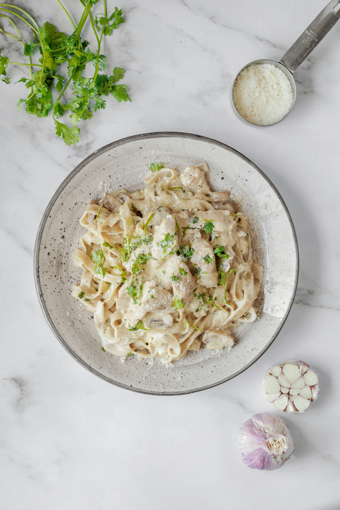

Creamy Pasta

Photo by
Sama Hosseini
on
Unsplash
Creamy and Comforting Pasta
Creamy pasta is a rich and satisfying dish made with pasta, cream, garlic,
and Parmesan cheese.
This simple recipe makes a delicious dinner in around 25 minutes.
Ingredients
- 200g pasta
- 1 cup heavy cream
- 2 cloves garlic
- 1 tablespoon butter
- 1/2 cup Parmesan cheese
- Salt and pepper
- 1 teaspoon parsley
Steps:
- Cook the pasta in salted boiling water.
- Melt butter in a pan.
- Add garlic and cook briefly.
- Pour in the cream.
- Add Parmesan cheese and stir.
- Season with salt and pepper.
- Add the cooked pasta and mix well.
- Garnish with parsley and serve.